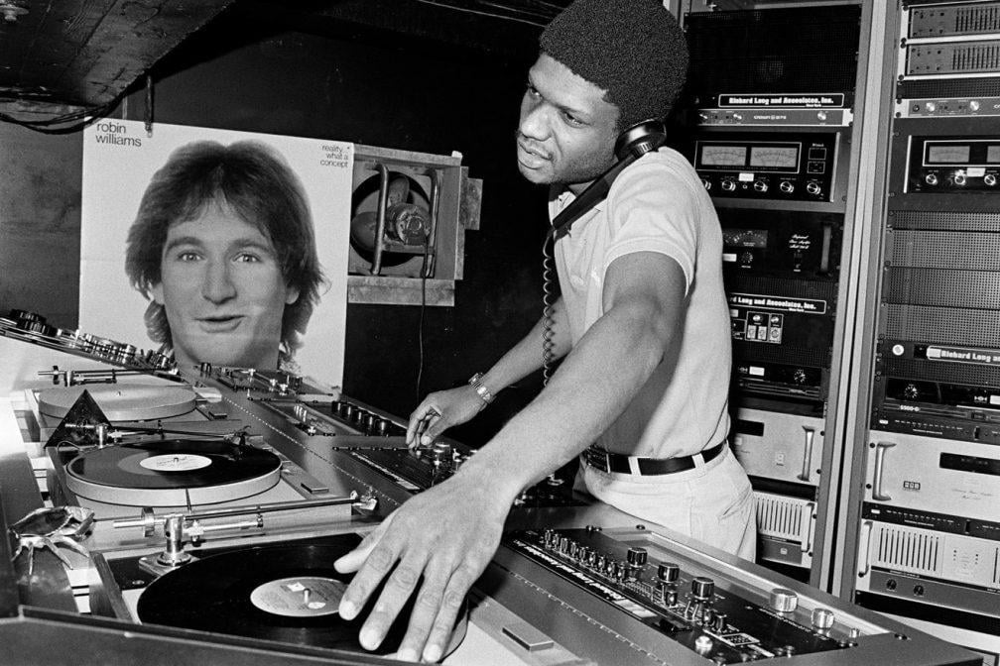
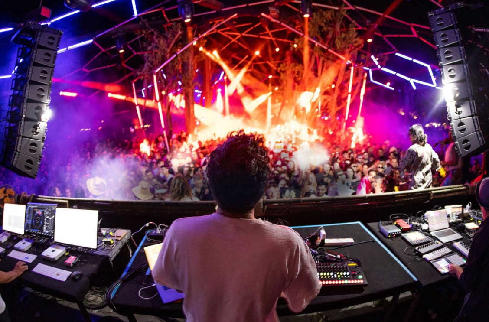
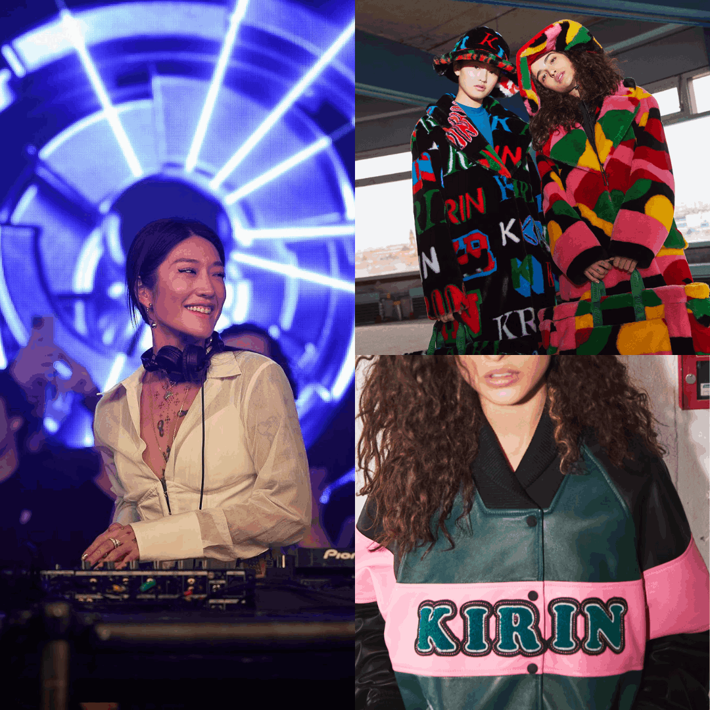
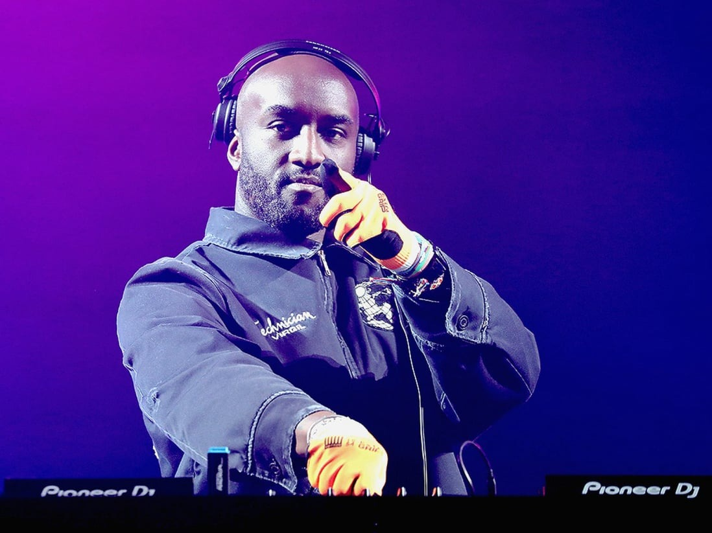

Created with Mobirise
Free Offline Site BuilderDesigners x DJs both are languages of emotion
They tell stories, shape experiences, and connect people through rhythm and imagination
Ancient Times
Music has always been part of human life — long before modern instruments or DJs existed.
In ancient China, people played guqin and guzheng to express emotion and seek inner peace.
Even before language, humans used rhythm, clapping, and humming to connect with each other.
Music is the earliest form of design — arranging sound, silence, and rhythm to shape emotion.
1970s

In the 1970s, DJs emerged from New York’s underground scene.
They began using turntables, rhythm, and sampling to design sound, not just play records.
A DJ became a creator — someone who reimagines and reshapes existing music to tell a new story.
Now

Today, DJs are not only musicians but also experience designers.
They combine light, visuals, and sound to build immersive environments — as seen in global festivals like Tomorrowland and Ultra Music Festival (UMF), where sound and design merge into one emotional journey.

Designers use visuals to express ideas and DJs use rhythm and sounds.
Both rely on intuition, emotion, and audience feedback.
👉 For example, Peggy Gou’s DJ sets and her fashion label share the same philosophy
— balancing rhythm, texture, and style.

Both design and DJing require structure, timing, and creative judgment.
Every beat or layout is a design decision that guides how people feel.
👉 Virgil Abloh, founder of Off-White and a DJ himself, once said: “DJing is like graphic design — only the medium changes from visuals to sound.”
Designers build visual experiences; DJs build sound experiences
Both care deeply about how people feel in the moment.
👉 At Tomorrowland and UMF, DJs collaborate with visual artists and lighting designers to create multi-sensory journeys — where every beat and light pulse tells a story.
In my opinion, DJs are sound designers.
Every transition, every change of rhythm in a DJ set is like a form of sonic layout design.
They are not just mixing songs — they are designing an emotional journey, shaping how the audience feels moment by moment.
In my view, a DJ is more than a musician; they are visual artists of sound.
They build the atmosphere of a space through rhythm and tone, just as designers build rhythm and balance through form and composition.
Created with Mobirise
Free Offline Site Builder